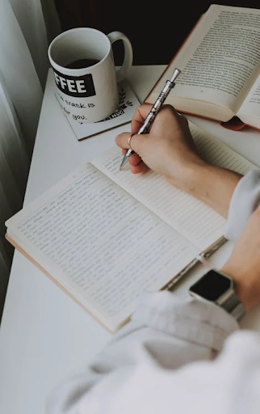

Associatief Schrijven
Laat de woorden stromen en schrijf je vrij! Tijdens deze workshop gaan we associatief schrijven. Dit betekent dat we beginnen met een stream of consciousness: iedereen schrijft op wat er in hem of haar opkomt. De docent noemt thema’s en doet suggesties die de cursisten kunnen inspireren, maar het is absoluut niet verplicht om je daaraan te houden.
Na ongeveer een kwartier stopt iedereen met schrijven en krijgen de cursisten de tijd om hun geschreven woorden terug te lezen. Dan kunnen ze beslissen op welke thema’s ze graag willen voortborduren.
Er wordt gewerkt in korte sessies – tot de laatste sessie, waarbij uit alle aantekeningen de mooiste zinnen worden geselecteerd die worden samengevoegd in een associatief gedicht.
Duur:
2 uur
Benodigdheden:
Pen en papier verzorg ik, maar als je liever typt, moet je je eigen laptop of tablet meenemen.
Kosten:
1-10 personen: 500 euro
11-20 personen: 600 euro
21 personen of meer: op aanvraag
Reiskosten (retour vanuit Utrecht)
10-100 km: 50 Euro
100-150 km: 100 Euro
150+ km: op aanvraag
Inschrijven 